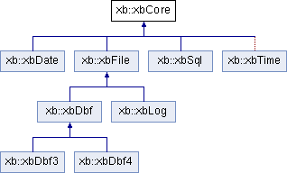

Class Inventory
Chapter Updated 09/01/24
| Class | Description |
|---|---|
| xbBcd | Supports binary coded decimal data |
| xbBlockRead | Supports block read functionality for improved sequential file access performance. |
| xbCore | Base class, shared system values |
| xbDate | Support date operations on a given date formatted as YYYYMMDD |
| xbDbf | Base class for DBF file handling. If you are adding support for a new file type, derive new file type class from this. |
| xbDbf3 | Derived from xbDbf, supports dBASE V3 files |
| xbDbf4 | Derived from xbDbf, supports dBASE V4 files |
| xbExp | Class for supporting expression logic |
| xbExpNode | Class definition of a single node, utilized by xbExp |
| xbFile | Main file class. If you are porting this library to another platform, start here |
| xbFilter | Supports filters |
| xbIx | Base class for index file support. If you are adding support for a new index type, derive new index type class from this. |
| xbIxNdx | Derived from xbIx, supports NDX style indices. |
| xbIxMdx | Derived from xbIx, supports MDX style indices. |
| xbIxTdx | Derived from xbIxMdx, supports TDX (temporary) style indices. Exclusive to XBase64, not compatible with other XBase tools. |
| xbLinkList | Class supporting linked list functionality |
| xbLinkListOrd | Class supporting ordered linked list functionality |
| xbLinkListNode | Class defining one node, used by xbLinkList and xbLinkListOrd |
| xbLog | Class supporting general log file activity |
| xbMemo | Base class for supporting memo (.DBT) files. If you are adding support for a new memo type, derive new memo type class from this. |
| xbMemoDbt3 | Derived from xbMemo, supports V3 Memo files |
| xbMemoDbt4 | Derived from xbMemo, supports V3 Memo files |
| xbSql | Supports SQL access |
| xbString | String handling class |
| xbTag | Class to support index tags |
| xbTblMgr | Class used internally in the library for managing multiple open files/tables |
| xbUda | Class for supporting fields for the xbSql functions. Stands for User data area |
| xbXBase | Class to tie everything together. Every application program starts with one of these |
